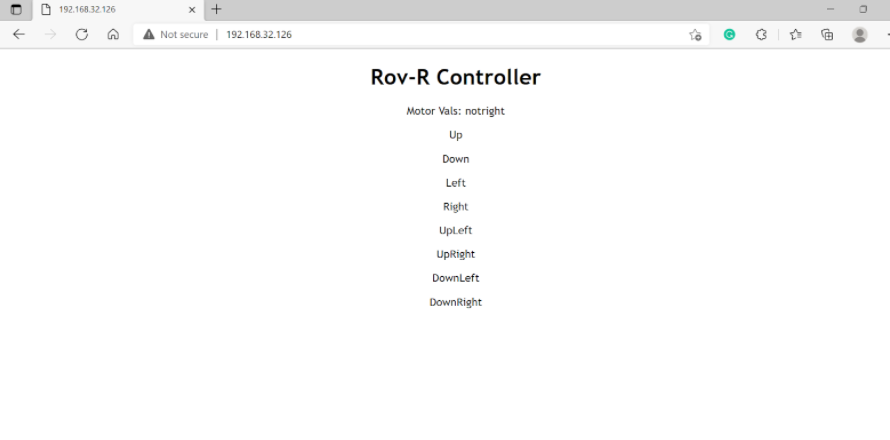
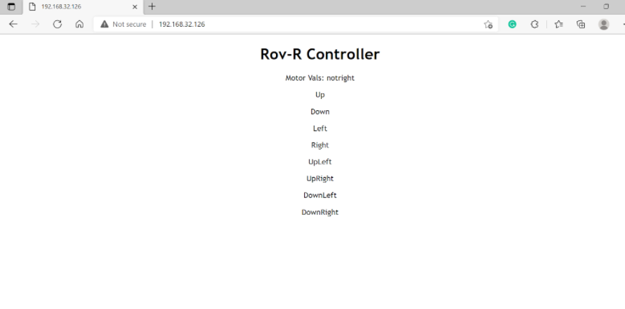

Process Overview
A summary of our sprints and how we got here.
Our project was split up into three separate sprints before the unveiling of our final product. During each sprint, we reflected on our current progress, evaluated it against our Minimum Viable Product, and thought over our next steps and goals for the next sprint. Below are the three sprints, where we discuss our progress throughout each one as well as how our project changed over time.
Sprint 1
 

At the very start of this project we obtained a small starter kit that provided the basics of our system. It provided a small chassis that we would want to upgrade in the future, 4 TT motors, and most importantly the 4 omnidirectional wheels. The electronics used in this sprint were an arduino board, a motor shield, an ESP32, and two 9V batteries.
In this sprint, our main focus was testing if we can reliably control the motors remotely from a laptop and learning how we will power all the electronics. The reason we have two 9V batteries is so that one powers the motor shield and therefore the motors and the other was used to power both the arduino and the ESP32. Once assembled we were able to successfully interface between our laptop and ROV-R and had full control over the system.
Sprint 2
For this sprint we increased the size of our chassis in order to manage the growing number of electrical components on ROV-R. We wired in and programmed the motors that we would be using for our projectile launcher to activate with the press of a button from our web service. We also increased maneuverability with the addition of different key combinations that help display the uniqueness of omni wheels as our robot can move in any direction and turn simultaneously.
Throughout this sprint we realized that an upper level of the chassis was necessary to house the electrical components of the system safely as well as to be a base for our projectile launcher. We designed this system to be laser cut but did not have it ready in time for this sprint.
Sprint 3
First, we laser cut and assembled the upper level of our chassis. During this time we also integrated a small receiver camera to display onto an LCD choosing to power it independently instead of through the Arduino.
Throughout the project thus far, we had a recurring issue of our components not getting enough power and failing because of it. To address this we revamped our power system replacing our 9V Energizer battery with a 12 V 3s LiPo and implemented a step down converter. This step down converter allows us to take the 12V from the LiPo down to 5V. We’re using one of the LiPos to power our arduino directly and the LiPo with the step down to power our camera and ESP32.
During this sprint we also redesigned a nerf flywheel launcher system and 3D printed it for our own purposes. Unfortunately there were issues with the design when printed making it nonfunctional for this sprint.
Finally, we invested in on-and-off switches to easily turn our system on and off.
Demo Day
Our main task for demo day was getting the projectile launcher functional. To do this we had to redesign the flywheel mounts, create a container for ammunition, and fabricate a loading mechanism.
In addition to this we 3D printed mounts for the camera and various electrical components, redesigned the upper chassis so it was more stable, and edited the code to allow for a servo motor instead of a normal motor for the loading mechanism.